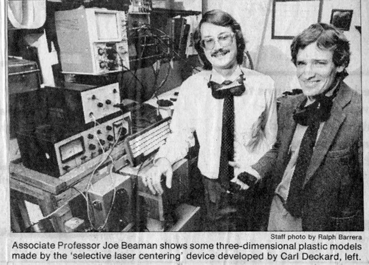

Вступление
3D печать появилась на свет 40 лет назад и открыла потрясающие возможности для создания различных моделей в прототипировании, стоматологии, мелкосерийном производстве, кастомизированных продуктов, миниатюр, скульптур, макетов и многого другого.
Рождение идеи
Доктор муниципального промышленного исследовательского института в Нагоя, Хидео Кодама, подал заявку на регистрацию патента на устройство, которое с помощью УФ-засветки послойно формировало жесткий объект из фотополимерной смолы. По сути, он описал современный фотополимерный принтер, однако не смог в течение года, как того требовало патентное право, предоставить необходимые данные для регистрации патента и забросил идею. Тем не менее, во многих источниках именно его называют изобретателем технологии 3D-печати.
В 1983 году трое инженеров - Ален Ле Мехо, Оливье де Витт и Жан-Клод Андрэ из французского национального центра научных исследований, в попытке создать то, что они называли «фрактальным объектом», пришли к идее использования лазера и мономера, который под воздействием лазера превращался в полимер. Заявку на патент они подали за 3 недели до американца Чака Хала. Первым объектом, созданным на аппарате, стала винтовая лестница. Технологию инженеры назвали стереолитографией, а патент был одобрен только в 1986 году. Благодаря им самый известный формат файла для 3D-печати и называется STL (от англ. stereolithography). К сожалению, институт не разглядел перспектив в изобретении и его коммерциализации, и патент не был использован для создания конечного продукта.
В тоже самое время Чак Халл работал в компании, которая делала покрытия для столешниц и мебели при помощи ультрафиолетовых ламп. Производство небольших пластмассовых деталей для прототипирования новых конструкций изделий занимало до двух месяцев. Чаку пришла в голову идея ускорить этот процесс совместив УФ технологию и размещение тонкого пластика послойно. В компании ему выделили небольшую лабораторию для экспериментов, где он работал по вечерам и выходным. В качестве материала Чак использовал затвердевающие под воздействием ультрафиолета фотополимеры на акриловой основе. Однажды ночью после месяцев экспериментов он смог наконец напечатать образец и был настолько окрылен удачей, что пошел домой пешком. Чак показал свое изобретение жене. Это была чашечка для промывки глаза, больше похожая на чашу для причастия, по мнению жены. Она и считается официально первой 3D-печатной моделью в мире и по-прежнему хранится в семье Халл, а после их смерти будет передана в Смитсоновский научно-исследовательский институт в Вашингтоне.
Чак Халл подал патентную заявку 8 августа 1984, и 11 марта 1986 года она была одобрена. Изобретение получило название «Аппарат для создания трехмерных объектов с помощью стереолитографии». Чак основал свою компанию - 3D Systems, и в 1988 году выпустил на рынок первый коммерческий 3D-принтер – модель SL1.
Еще один новый способ 3D-печати появился примерно в то же время, что и SLA-печать. Это селективное лазерное спекание (SLS), при котором лазер используется для превращения сыпучего порошка (вместо смолы) в твердый материал. Разработкой занимались Карл Декард, молодой студент бакалавриата в Техасском университете в Остине, и его преподаватель, профессор, доктор Джо Биман. Причем идея принадлежала Карлу. В 1987 году они вместе основали корпорацию Desk Top Manufacturing (DTM) Corp. Однако пройдет еще не менее 20 лет, пока SLS 3D-печать станет коммерчески доступной потребителю. В 2001 году компанию выкупил Чака Халл, 3D Systems.
Удивительно, но более простой и дешевый способ 3D-печати - FDM (Fused Deposition Modelling) был создан после SLA и SLS, в 1988 году. Его автором стал авиационный инженер Скотт Крамп. Крамп искал простой способ создания игрушечной лягушки для своей дочери и использовал горячий клеевой пистолет: расплавил пластик и разлил его по слоям. Так родилась идея FDM 3D-печати, технологии послойного наплавления пластикой нити. Крамп запатентовал новую идею и стал соучредителем Stratasys вместе со своей женой Лизой Крамп в 1989 году. В 1992 году они выпустили на рынок свой первый серийный продукт - Stratasys 3D Modeler.
3D-печать становится доступной
Первые создаваемые 3D Systems и Stratasys агрегаты были громоздкими и дорогостоящими. Стоимость одного составляла сотни тысяч долларов, и использовать их могли только крупнейшие компании автомобильной и аэрокосмической отрасли. Принтеры имели массу ограничений и не могли широко применяться. Развитие технологии шло очень медленно. Спустя 20 лет, в 2005 году появился проект RepRap (Replicating Rapid Prototyper) — самовоспроизводящийся механизм для быстрого изготовления прототипов.
Его идейным вдохновителем был доктор Эдриан Бауэр из Университета Бата в Великобритании. Целью проекта было «самокопирование», воспроизведение компонентов самих 3D-принтеров. На фотографии все пластиковые детали «ребенка» напечатаны на «родителе». Но фактически группа энтузиастов во главе с Эдрианом смогла наконец создать бюджетный 3D-принтер для домашнего или офисного использования.
Идею быстро подхватили трое техногиков из Нью-Йорка и открыли компанию по производству настольных FDM принтеров - MakerBot. Этот и стало вторым поворотным моментом в современной истории 3D-печати.
Параллельно шли разработки других технологий. Среди них можно выделить биопринтинг. Томас Боланд из Клемсонского Университета запатентовал использование струйной печати для 3D-печати живых клеток, что сделало возможным печать человеческих органов в будущем. Исследования в этой области ведут десятки компаний по всему миру.
Еще одним важным способом применения новой технологи стало создание протезов, сначала обычных, а потом и бионических. В 2008 году первый напечатанный протез был успешно трансплантирован пациенту и позволил ему вернуться к нормальному образу жизни.
3D-печать сегодня
В последние годы 3D-печать стала доступна массовому потребителю: цены на принтеры значительно сократились, а их использование стало удобнее. Фотополимерные 3D-принтеры печатают детализированные модели с высокой точностью и разрешением. Количество пользователей растет в том числе за счет огромного сообщества энтузиастов, готовых прийти на помощь новичкам. Этому способствует и наличие готовых файлов для 3D-печати и доступность программного обеспечение для создания моделей.
3D-печать становится уже стандартным решением в таких отраслях как стоматология, ювелирное дело, ортопедия, в других отраслях внедрение идет полным ходом. Перспективы бесконечны - от строительства домов до нейрохирургии, от печати шоколадом до печати металлом.